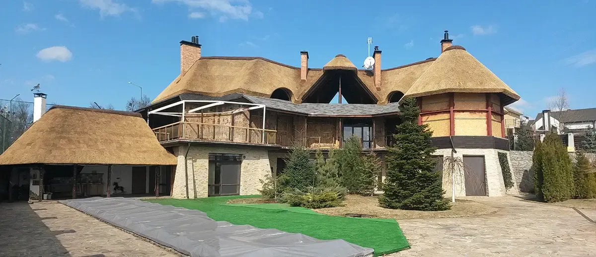

Послуги
Створюємо натуральні очеретяні покрівлі, працюємо з кроквяними системами, альтанками та декором у традиційному стилі.

Очеретяні дахи
Будинок в гармонії з природою!
Очерет використовувався як покрівельне покриття для будівель різного виду та призначення протягом багатьох століть. Завдяки безперечним архітектурним перевагам, високим технічним характеристикам та сучасній системі укладання, популярність очеретяних та солом'яних дахів безперервно зростає. Існує лише одне конструктивне обмеження - кут нахилу покрівлі повинен становити не менше 30° за відсутності слухових вікон і не менше 45° - за наявності. У високогірних, сніжних районах кут може бути збільшений до 50°, що одночасно підвищує довговічність, та збільшує срок експлуатації майже в два рази.
Читати далі Згорнути
Гнучкість стебел очерету дає безмежні можливості щодо дизайну та форм. Для влаштування очеретяної покрівлі використовується водяний очерет, що спеціально вирощується, стебла якого мають високу вологостійкість, міцність і довговічність. Вони сортуються за певними параметрами (розмірами, міцністю, стрункістю, гнучкістю).
Товщина покрівельного килима становить 30 см, що дозволяє уникнути додаткового утеплення покрівлі. Очерет може бути просочений спеціальними розчинами, за своєю пожежостійкістю не поступається традиційним покрівельним покриттям. Очеретяній покрівлі не страшні злива, град, ураган, сильні заморозки та різкі перепади температур. Під очеретяною покрівлею ви ніколи не почуєте гуркіт дощу, не відчуєте впливу накопичуваної статистичної електрики, як під металевою. Під натуральною покрівлею тепло взимку, прохолодно влітку, очерет впевнено виконує роль природного кондиціонера, будинок дихає і живе тихим життям. Очерет - природно стійкий до вологості, тож покрівля не промокає більше трьох сантиметрів своєї товщини.
У якісно покритому очеретяному даху немає щілин, тому гризуни не поселяються в щільно покладеному очереті, тим більше, що така рослинність їм не до смаку. Птахи також не є проблемою - очерет занадто важкий і міцно закріплений, щоб птахи могли витягнути окремі стебла.


Накриття очеретом
Монтаж
Монтаж очеретяної покрівлі виконується на підготовлену обрешітку (суцільну або не суцільну) та кроквяну систему, що витримують вагу покрівельного килима близько 50 кг/м.кв.
Читати далі Згорнути
Перед укладанням в рештування вкручуються саморізи, які міцно закріплюють прижимний дріт. Потім на обрешітку розкладають снопи очерету. Стебла якого, довжиною 1,5-2,2м за допомогою сталевих стрижнів та дроту прив'язують до основи. Дріт, прикріплений саморізами до рештування, протягують через очерет та притягують ним стрижні через кожні 30 см. Самі ж стрижні та дріт ховають, накриваючи зверху наступним шаром очерету. В результаті кожне стебло закріплене притисканням стрижнів 5-7 разів по своїй довжині. Нижню частину кожного стебла відводять від схилу даху так, щоб лише останні 2-4 см були зовні. Дощ та сніг скочуються зі стебла на стебло вниз та стікають з даху. Волога не проникає вглиб більше ніж на 3–4 см.
Орієнтовно влаштування очеретяного покриття - 10 м² за 1 робочий день.
Укладаємо очерет поверх існуючої покрівлі (за бажанням замовника). Демонтуємо старе покриття перед укладанням (при необхідності).
Ізоляція
Очеретяна покрівля є 'дихаючою', тому вона не потребує використання пароізоляційних та гідроізоляційних мембран, традиційних вентиляційних просторів. При товщині слою очерету 30см, додаткове утеплення такому даху також не потрібно.
Кроквяні системи
Конструкція та декор
Кроквяна система з обрешіткою під очеретяну покрівлю за ідеального кута нахилу 45 градусів забезпечує ефективне відведення дощової води та рівномірне розподілення навантаження. Кут у 45 градусів вважається оптимальним для очеретяного покриття, оскільки він сприяє довговічності покрівлі, запобігає застою води та забезпечує естетичний вигляд даху. Очерет — це натуральний матеріал, який має високі теплоізоляційні властивості та природну стійкість до атмосферних впливів.
Читати далі Згорнути
Крокви в цій системі виготовляються з якісної деревини, наприклад, сосни або ялини, які мають відповідну міцність для витримування ваги очеретяного покриття, снігу та інших навантажень. Відстань між кроквами зазвичай становить 60–80 см залежно від проєктних вимог. Для забезпечення довговічності крокв деревину рекомендується обробити спеціальними антисептиками, що захищають від гниття, комах і грибків.
Обрешітка складається з дерев'яних рейок, які укладаються горизонтально на крокви з інтервалом у 30 см. Такий крок забезпечує рівномірний розподіл ваги покриття, а також дозволяє надійно закріпити очерет. Для стабільності та зручності монтажу рейки фіксуються до крокв цвяхами або саморізами. Альтернативою для обрешітки є суцільна основа з OSB-плит або вологостійкої фанери, яка запобігає прогинам і додає конструкції додаткової міцності.
Очеретяний дах також може укладатися з попереднім шаром завтовшки до 2 см, так званою "матовкою". Це тонкий шар очерету з товстими стеблами, який укладається першим і слугує базовою основою для основного покриття. Матовка виконує одразу кілька важливих функцій: запобігає протиканню основного шару очерету кінцями китиць, усуває їх звисання всередину приміщення та покращує загальний вигляд покриття зсередини. Завдяки цьому підходу усувається потреба в додатковій підшивці стелі для приховування недоліків, а кроквяна система залишається видимою.
Відкриті крокви можуть бути декоративним елементом інтер’єру, якщо їх обробити, відшліфувати та пофарбувати. Вони гармонійно вписуються у стилістику заміських будинків або екохат, стаючи частиною загального дизайну.
Якщо існуючий кут нахилу даху не відповідає необхідним параметрам, конструкцію кроквяної системи можна перепроєктувати. Це може включати збільшення або зменшення кута шляхом зміни довжини крокв, підняття або опускання мауерлата чи конькового прогону. У разі капітальної реконструкції можливо встановити додаткові елементи, які забезпечать потрібний нахил для очеретяного даху.
Така система даху є екологічною, довговічною та естетичною. Вона чудово вписується в природне середовище, зберігаючи природний вигляд будівлі, та є гарним вибором для людей, які цінують традиційні та натуральні матеріали в архітектурі.
Гребені дахів
Окрім основного покриття, кожен дах має завершальний елемент, який додає йому естетичності та захищає від впливу вологи й вітру. Ця деталь, відома як коник або гребінь даху, не лише покращує зовнішній вигляд, а й підвищує надійність конструкції, продовжуючи її експлуатаційний термін.
Для очеретяної покрівлі існує кілька варіантів облаштування коника з використанням різних матеріалів.
Читати далі Згорнути
З вереску
Вереск — це вічнозелена рослина, яка росте в лісах і на болотах, утворюючи густі зарості. Його тонкі, розгалужені гілочки створюють пишну текстуру, що використовується в різних декоративних елементах, зокрема й у покрівельних роботах. У випадку очеретяних дахів вересковий коник укладається поверх руберойду та виконує виключно декоративну функцію. Він надає даху традиційного та природного вигляду, однак із часом втрачає об'єм і потребує оновлення приблизно кожні 10-15 років. Такий варіант є найдешевшим і досить простим у виконанні.
З очерету
Цей варіант є більш довговічним та естетично привабливим. Очерет укладається у вигляді хвиль або спеціальних візерунків, що додає даху унікального вигляду. Крім того, він чудово вписується в загальну композицію, створюючи єдиний гармонійний стиль. Такий варіант є дорожчим, ніж вересковий, однак він слугує значно довше без необхідності частого оновлення.
З артбетону
Більш сучасним і довговічним рішенням є використання артбетону. Це декоративний бетон, який можна виготовити з різноманітними орнаментами та текстурами або імітуючи натуральні матеріали. Такий гребінь не лише гарно виглядає, а й розрахованийна тривалу експлуатацію. Його можна пофарбувати в будь-який колір, що дозволяє гармонійно поєднувати дах із загальним дизайном будівлі.
З пластику
Цей варіант дуже нагадує черепицю. Він має широкий вибір кольорів, що дає змогу підібрати відтінок, який ідеально доповнить покрівлю. Пластик є популярним серед замовників, має доступну ціну і є досить міцним і довговічним, проте він не настільки екологічний, як натуральні матеріали.
З кераміки
Керамічний гребінь виглядає розкішно, гармонійно поєднуючись із природними матеріалами. Він має високу міцність і стійкість до впливу вологи, ультрафіолету та температурних коливань. Завдяки випалу при високих температурах кераміка не втрачає своїх властивостей з часом і може служити десятиліттями.
З міді
Мідні гребені з часом покриваються благородною патиною, що надає даху особливого шарму та шляхетного вигляду. Вони мають високу стійкість до корозії, не потребують додаткового догляду й можуть служити понад 100 років. Мідь пластична, тому з неї можна створити складні декоративні форми, що додадуть індивідуальності покриттю. Крім того, цей матеріал екологічний і повністю придатний для вторинної переробки. Суттєвим недоліком є висока вартість, однак довговічність та естетична привабливість роблять мідний гребінь чудовою інвестицією в якість.
З титан-цинку Rheinzink (Райцинк)
Титан-цинковий сплав Rheinzink (Райцинк) складається з цинку, титану та міді. Під впливом атмосферних умов з часом матеріал патинується, набуваючи матового сірого відтінку. Він підходить для всіх кліматичних зон. Виробник зазначає строк служби покрівельних елементів із цього матеріалу понад 100 років. Rheinzink є екологічно чистим матеріалом: він нетоксичний, не містить шкідливих домішок і не виділяє небезпечних речовин. Завдяки цим властивостям титан-цинковий гребінь є надійним, довговічним і безпечним рішенням для покрівлі.
Таким чином, вибір матеріалу для гребеня залежить від естетичних подобань, бюджету та експлуатаційних вимог. Незалежно від матеріалу, головне завдання гребеня даху — захист конструкції та надання їй завершеного вигляду.
Декор інтер’єрів
У стилі українських традицій
Очерет як природний і автентичний матеріал використовується для декорування внутрішніх приміщень, додаючи їм затишку, тепла та естетики. У готелях, ресторанах і кафе він стає чудовим елементом, який підкреслює українську автентичність, екостиль і зв’язок із природою. Очеретяні панелі, декоративні стелі або акцентні стіни створюють атмосферу народних традицій, повертаючи нас до витоків культури та гармонії з природним середовищем.
Особливо популярним є використання очерету в ресторанах, що спеціалізуються на українській кухні. Покриті очеретом стіни та стелі вдало доповнюють дерев’яні меблі, вишиті рушники та глиняний посуд. Такий дизайн нагадує про затишок сільської хати, де кожна деталь говорить про гостинність та багатство традицій.
Читати далі Згорнути
Для готелів очерет стає інструментом створення унікальних інтер’єрів, що вирізняються своєю природністю та затишком. Очерет можна використовувати для оформлення холів, лаунж-зон чи навіть кімнат, додаючи акцент природного матеріалу, який гармонійно поєднується з текстилем, деревом чи натуральним каменем.
У кафе очерет часто використовують для створення тематичних зон. Це можуть бути очеретяні перегородки, світильники або декоративні елементи на стінах. Таке оформлення не лише створює теплу атмосферу, але й допомагає створити спокійну атмосферу для відпочинку.
Очеретяні панелі можуть сприяти поглинанню звуку та зменшенню відлуння в приміщенні. Це корисно для ресторанів і кафе, де важливий акустичний комфорт. Ефект залежить від товщини, конструкції та способу монтажу панелей.
Декорування очеретом дозволяє реалізувати різні дизайнерські ідеї. Його можна комбінувати з різними матеріалами: наприклад, глиною для створення етнічного стилю, металом для сучасних інтер’єрів чи текстилем для більш затишного вигляду. Можливість обробки та фарбування очерету відкриває широкі горизонти для творчості.
Декор очеретом може мати не лише естетичне, а й функціональне значення. Наприклад, у ресторанах з відкритими кухнями очеретяні перегородки або навіси допомагають розмежовувати простір, створюючи комфорт для гостей.
Очеретяний декор — це ідеальне рішення для закладів, які прагнуть виділитися та створити атмосферу, яка надовго залишиться в пам’яті відвідувачів. Це спосіб гармонійно поєднати сучасний дизайн із традиційними мотивами, зберігаючи природний шарм і екологічність.
Альтанки
Під стріхою з тином
Мальовничі дерев'яні альтанки для відпочинку в кафе та ресторанах, літні кухні та барбекю-комплекси, покриті натуральним очеретом, незмінно користуються високим попитом. Вони створюють затишну атмосферу та гармонійно вписуються в природне середовище.
Особливо виразно виглядають альтанки з дикого зрубу: природні форми колод і фактура дерева гармонійно поєднуються з очеретяною покрівлею. Така споруда зберігає характер традиційної дерев’яної архітектури та створює затишне місце для відпочинку з родиною чи друзями.
Читати далі Згорнути
Нерідко власники вже готових і обжитих будинків вирішують розширити свою територію, додаючи оригінальні прибудови. Літня кухня з комплексом барбекю стає чудовим рішенням для створення затишного куточка, де можна насолоджуватися часом із сім'єю та друзями. Такі споруди ідеально підходять для заміських будинків, додаючи їм функціональності та естетики.
Дерев’яні альтанки та літні кухні з очеретяними дахами поєднують місце для відпочинку з виразним природним оформленням. Планування простору можна адаптувати для сімейних зустрічей, приймання гостей або роботи закладу.
Виконуємо роботи «під ключ»: від проєктування та виготовлення до монтажу. Узгоджуємо із замовником розміри, планування та оформлення споруди. Це можуть бути невеликі альтанки або комплекси з обідньою зоною та місцем для приготування їжі.
Такі будівлі гармонійно доповнюють простір і стають ключовим елементом ландшафтного дизайну. Вони не лише практичні, але й надихають своєю природною красою, створюючи відчуття єднання з природою.

Обговорімо ваш проєкт.
Зацікавила одна з наших послуг? Розкажіть про ваш об’єкт та побажання — допоможемо обрати рішення з очерету.
Працюємо в Україні та за кордоном.